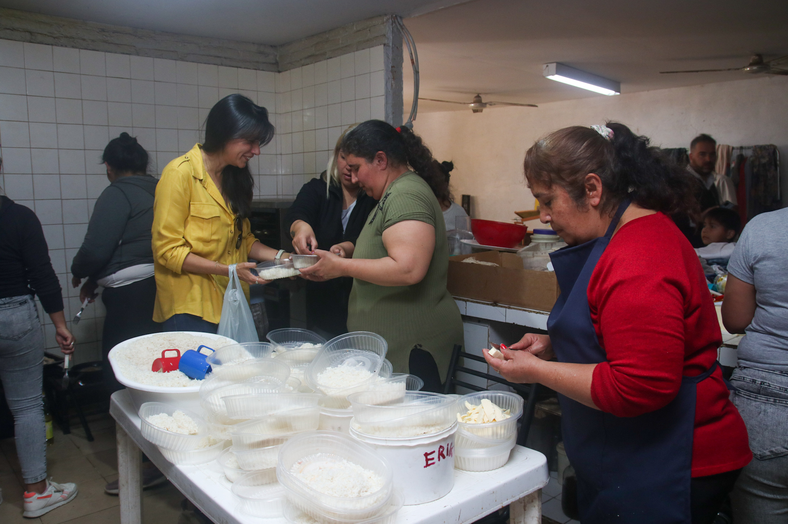
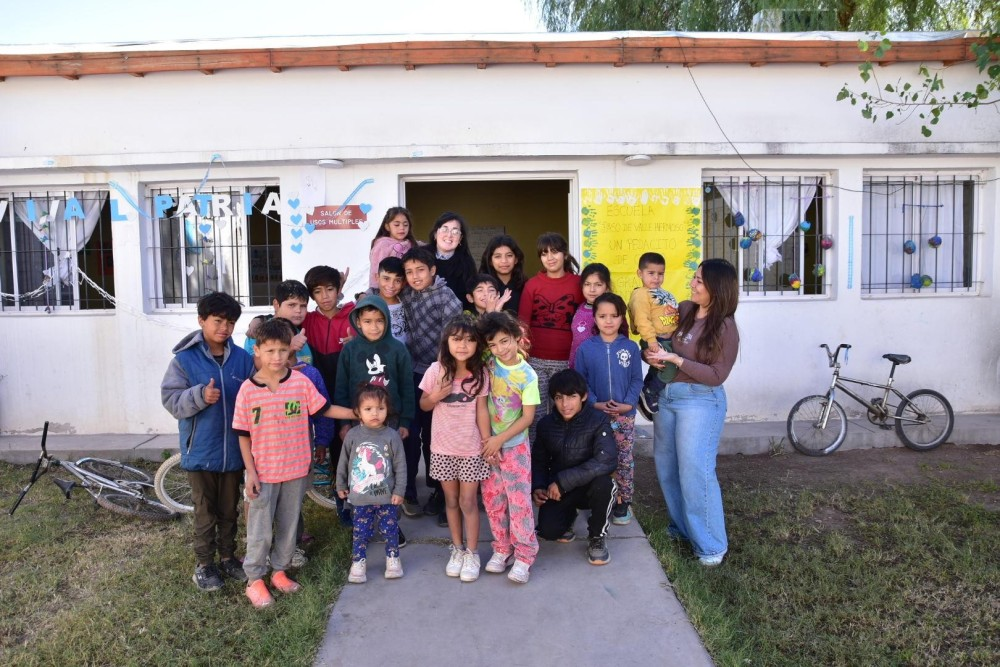

Educación sin Barreras Problema: Miles de niños y niñas en zonas vulnerables no tienen acceso a una educación de calidad ni a los materiales básicos para cursar el ciclo lectivo, lo que perpetúa el ciclo de pobreza. Solución: Implementamos programas de educación inclusiva que proporcionan materiales didácticos, capacitación a docentes y apoyo logístico para garantizar el acceso a una educación de calidad en zonas rurales y marginadas. Trayectoria: Desde 2015, hemos equipado a más de 500 escuelas y capacitado a 2.000 docentes en todo el país. A quienes Llega: Niños, niñas y adolescentes en edad escolar de comunidades rurales y barrios populares. Quiero Ayudar
 Nutrición para el Futuro Problema: La malnutrición en los primeros años de vida afecta el desarrollo cognitivo y físico irreversiblemente. Solución: Implementamos comedores comunitarios y brindamos talleres de nutrición integral para familias, asegurando que los más chicos reciban los nutrientes esenciales. Trayectoria: Contamos con una red de 50 comedores apadrinados que sirven más de 10.000 platos de comida nutritiva por mes. A quienes Llega: Infancias de 0 a 5 años y mujeres embarazadas o en período de lactancia. Quiero Ayudar
 Espacios Seguros Problema: En situaciones de crisis económicas o violencia doméstica, los niños pierden sus espacios de contención y juego. Solución: Creamos y mantenemos centros de contención infantil donde profesionales brindan apoyo psicológico, talleres recreativos y asistencia legal. Trayectoria: Nuestro equipo ha intervenido en más de 300 casos de emergencia, garantizando la restitución de derechos. A quienes Llega: Niños y adolescentes en situación de riesgo social o emergencia habitacional. Quiero Ayudar